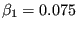

Next: first loop: getlocalresults.f
Up: Mesh refining procedure
Previous: START OF MAJOR LOOP
Contents
The first time the loop is run, the tetrahedral mesh is still the unrefined
mesh. The following actions are performed in calculateh.f:
- determine the length of each edge and store it in field d(*)
- determine for each node the mean length of the edges to which it
belongs. Multiply this value with the limit value specified by the user and
divide it by the actual value of the user-defined criterion. Store the
resulting value in field h(*). For instance, if the user has selected the
stress criterion, the limit value is 50. and the actual stress value in the
node is 200., then an average edge length in the node of 0.1 will lead to a
value of 0.025 in this node, i.e. the desired edge length is locally 0.025.
- determine the minimum value of d(*) across the complete mesh and store
it in .
guido dhondt
2018-12-15